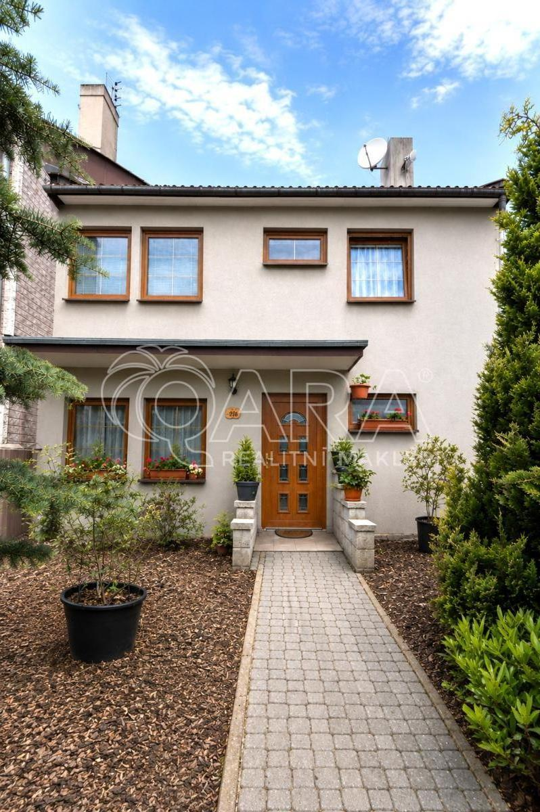

Rodinný dům 6+1 s terasou a zahradou Rožmitál pod Třemšínem
Hledáte rodinný dům, kde za posledními domy v ulici začínají louky a lesy?
Nabízím k prodeji řadový rodinný dům o dispozici 6+1 v klidné části Rožmitálu pod Třemšínem, v ulici U Stromovky. Dům se nachází v slepé ulici na samém okraji zástavby, kde již navazují louky a lesy Brd, což vytváří jedinečnou atmosféru bydlení v blízkosti přírody. Jedná se o dvoupodlažní dřevostavbu typu OKAL, kolaudovanou v roce 1990, s užitnou plochou 137 m², stojící na pozemku o velikosti 265m².
Dispozice domu je velmi praktická. V přízemí se nachází vstupní část s předsíní a halou, koupelna se sprchovým koutem, WC a tři samostatné místnosti. Jedna z nich vznikla úpravou původní garáže a dnes slouží jako plnohodnotný obytný prostor. Přízemí tak nabízí variabilní využití například jako pracovna, pokoj pro hosty, zázemí pro podnikání nebo oddělená část pro vícegenerační bydlení.
V patře se nachází hlavní obytná část domu. Obývací pokoj působí příjemně a útulně a nabízí dostatek prostoru pro každodenní život i odpočinek. Kuchyně je řešena samostatně. Dále jsou zde ložnice, dětský pokoj a koupelna. Součástí domu je terasa a navazující zahrada, která poskytuje ideální prostor pro relaxaci, posezení s rodinou nebo přáteli. Díky poloze na okraji zástavby si zde můžete užívat klid a soukromí.
Přibližně před 15 lety prošel dům modernizací, která zahrnovala zateplení fasády, výměnu oken a vstupních dveří za plastová, úpravu elektroinstalace a rozvodů vody a odpadů v plastu. Plastové jsou také dveře vedoucí na terasu v zadní části domu. Dům je napojen na obecní vodovod a kanalizaci. Vytápění je zajištěno kotlem na tuhá paliva (uhlí a dřevo) a ohřev vody řeší kombinovaný bojler, který umožňuje ohřev jak při vytápění, tak elektricky.
Výhodou je také možnost přikoupit sousední pozemek.
Rožmitál pod Třemšínem nabízí kompletní občanskou vybavenost školu, školku, lékaře, obchody i restaurace. Pro volný čas je k dispozici řada dětských hřišť, knihovna, muzeum nebo kino. Lokalita je zároveň atraktivní díky bezprostřední blízkosti Brd, které nabízejí množství turistických a cyklistických tras, a zároveň dobrou dostupnost do Prahy.
Ideální místo pro rodinný život klidná slepá ulice, zahrada, dostatek prostoru a příroda doslova za plotem.
Pro více informací nebo domluvení prohlídky mě neváhejte kontaktovat.

Máte zájem o prohlídku?
Ozvěte se mi pro bližší informace, podklady k nemovitosti nebo sjednání termínu.